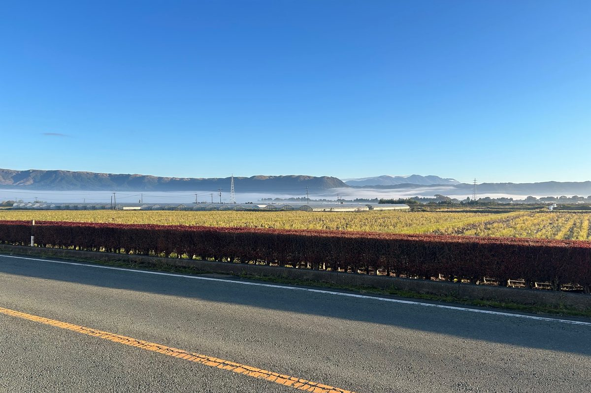

11月に入り、阿蘇谷では朝の冷え込みがぐっと強くなってきました。
ある朝、訪問に向かう途中で車を止めると、あたりは一面の霧でした。稲刈りが終わった田んぼでは、切り株から青いひこばえが伸びています。見上げると空は青いのに、足もとから遠くの家並みまでは白い霧にすっぽり包まれていました。畦の草には朝露が光り、ひんやりとした空気が気持ちのいい朝です。
霧を抜けると
少し走って霧の外に出ると、今度は外輪山のふもとに雲海のような霧の帯が広がっていました。

霧を抜けると、外輪山のふもとに雲海が広がっていました。
よく晴れて風のない夜は、地面の熱が空へ逃げて冷え込みが強くなります。山に囲まれた阿蘇谷には冷たい空気がたまりやすく、こうした朝霧や雲海が見られます。きれいな景色は、冷え込みが厳しい朝のしるしでもあります。
冷え込む朝に気をつけたいこと
朝晩の寒さが増すこの時期は、体への負担も大きくなります。
- 起きる前に部屋を暖める：暖房のタイマーを使ったり、羽織るものを枕元に置いておくと安心です
- トイレや脱衣所の寒さに注意：暖かい部屋から急に寒い場所へ移ると、体に負担がかかります。小さな暖房器具を置くなど、温度差を少なくする工夫をおすすめします
- 急に立ち上がらない：朝は体が動きにくいものです。布団の上で手足を少し動かしてから、ゆっくり起き上がりましょう
暖房器具を使い始めるときの注意は、「暖房を出す前に、ひと手間を」の記事でご紹介しています。
霧の日の外出・運転
霧の朝は、車からも歩いている人からも、まわりが見えにくくなります。
- 車を運転するとき：早めにライトを点け（ハイビームは霧に反射して見えにくくなるので、ロービームで）、スピードを落として車間距離を十分にとりましょう
- 歩いて出かけるとき：明るい色の服や反射材を身につけると、車から見つけてもらいやすくなります
- 急ぎでなければ：日が高くなると霧は晴れてくることが多いので、少し時間をずらして出かけるのも一つの方法です
最後に
季節の変わり目は、体調を崩しやすい時期です。「最近朝が寒くてつらい」「家の中の寒さが気になる」など、ちょっとしたことでも、担当のケアマネジャーやヘルパーに気軽に声をかけてください。体調に不安があるときは、主治医にご相談ください。
阿蘇の朝の景色を楽しみながら、あたたかくしてお過ごしください。